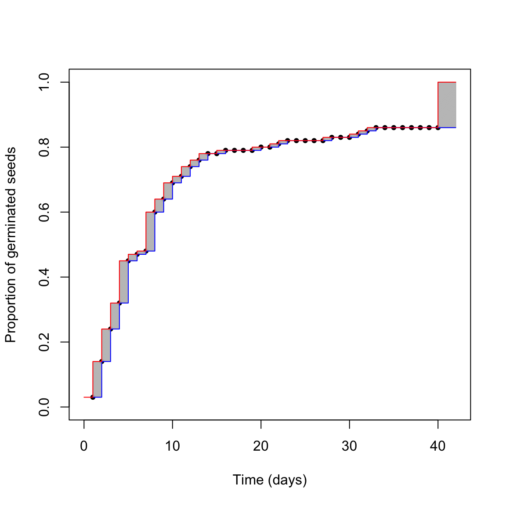
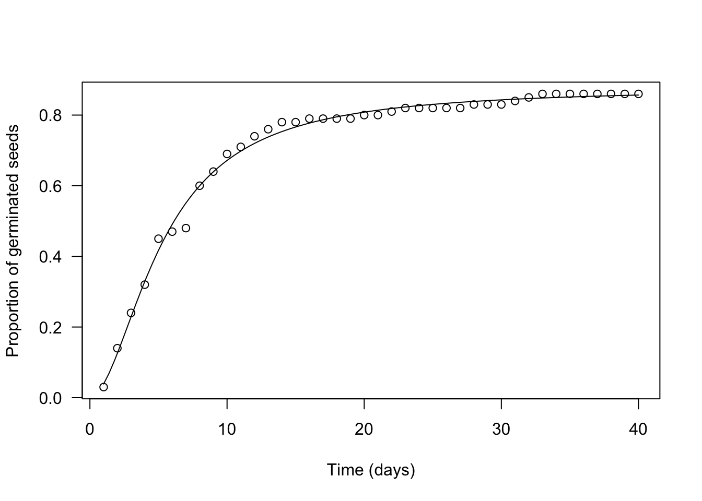

Section 2 What is time-to-event data?
In general, time-to-event data describe the amount of time elapsed before an event of interest occurs. In medicine, such an event is, e.g., the death, or the remission from a disease; in agriculture we are more often interested in other types of events, such as germination, emergence or flowering. Regardless the discipline, studying the time to en event of interest requires periodical inspections on a population of individuals (people, animals, seeds, plants…) to record, for each individual, the date when the event is achieved. The data resulting from such a series of periodical inspections is usually called time-to-event data.
Please, note that we have been talking about periodical inspections; in some cases, germination/emergence assays are performed with only one inspection at a pre-defined time. With this type of assays we can only record the proportion of germinated seeds (in general: the proportion of individuals with the event) at a given time point, while we cannot record the event time for all individuals. Therefore, this type of data are NOT time-to-event data and they will not be the object of this tutorial.
2.1 Time-to-event data are censored data
You may wonder: what’s the matter with time-to-event data? Do they have anything special that needs our attention? The answer is, definitely, yes!
Indeed, with very few exceptions, time-to-event data are affected by a peculiar form of uncertainty, which takes the name of censoring. It relates to the fact that, due to the typical monitoring schedule, the exact time-to-event may not always be determined. Think about a germination assay, where we put, e.g., 100 seeds in a Petri dish and make daily inspections. At each inspection, we count the number of germinated seeds. In the end, what have we learnt about the germination time of each seed? It is easy to note that we do not have exact values, we only have a set of intervals. Let’s consider three possible situations.
- If we found a germinated seed at the first inspection time, we only know that germination took place before the inspection (left-censoring).
- If we find a germinated seed at the second (or later) inspection time, we only know that germination took place somewhere between the previous and the present inspection (interval-censoring).
- If we find an ungerminated seed at the end of the experiment, we only know that its germination time, if any, is higher than the duration of the experiment (right-censoring).
Censoring implies a lot of uncertainty, which is additional to other more common sources of uncertainty, such as the individual-to-individual variability or random errors in the manipulation process. The problem of censoring has been widely recognised in other disciplines, such as medicine, in relation to survival data (time-to-death data). In order to address that problem, a vast body of methods has developed, which goes under the name of ‘survival analysis’.
In principle, time-to-germination and time-to-emergence data are totally similar to time-to-death data, apart from the fact that we usually deal with different (and less sad) events. Unfortunately, such a connection has been largely overlooked by plant biologists and, as the consequence, the problem of censoring has been most often neglected. This is not an unfortunate practice and it is important that we become aware about the possible consequences of neglecting censoring during the data analysis step.
2.2 Motivating example: a simulated dataset
It may be useful to think about a possible mechanism by which time-to-event data arise. Let’s imagine that we have a population with 85% of germinable seeds (the other ones are dormant and, therefore, they are not immediately able to germinate). The germinable fraction is composed by seeds with variables germination times, as dictated by their genotypes and environmental conditions. Let’s assume that such a variability can be described by using a log-logistic distribution, with a median germination time \(e = 4.5\) days and a shape parameter \(b = 1.6\).
If we sample 100 seeds from that population, the sample will not necessarily reflect the characteristics of the whole population. We can do this sampling in R, by using a three-steps approach.
2.2.1 Step 1: the ungerminated fraction
First, let’s simulate the number of germinated seeds, assuming a binomial distribution with a proportion of successes equal to 0.85. We use the random number generator rbinom():
#Monte Carlo simulation - Step 1
d <- 0.85
set.seed(1234)
nGerm <- rbinom(1, 100, d)
nGerm
## [1] 89We see that, in this instance, 89 seeds germinated out of 100, which is not the expected 85%. This may be regarded as an expression of the typical random sampling variability.
2.2.2 Step 2: germination times for the germinated fraction
Second, let’s simulate the germination times for these 89 germinable seeds, by drawing from a log-logistic distribution with \(b = 1.6\) and \(e = 4.5\). To this aim, we use the rllogis() function in the actuar package (Dutang et al., 2008):
#Monte Carlo simulation - Step 2
library(actuar)
b <- 1.6; e <- 4.5
Gtimes <- rllogis(nGerm, shape = b, scale = e)
Gtimes <- c(Gtimes, rep(NA, 100 - nGerm))
Gtimes
## [1] 3.2936708 3.4089762 3.2842199 1.4401630 3.1381457
## [6] 82.1611955 9.4906364 2.9226745 4.3424551 2.7006042
## [11] 4.0202158 8.0519663 0.9492013 7.8199588 1.6163588
## [16] 7.9661485 8.4641154 11.2879041 9.5014360 7.2786264
## [21] 7.5809838 12.7421713 32.7999661 9.9691944 1.8137333
## [26] 4.2197542 1.0218849 1.6604417 30.0352308 5.0235265
## [31] 8.5085067 7.5367739 4.4185382 11.5555259 2.1919263
## [36] 10.6509339 8.6857151 0.2185902 1.8377033 3.9362727
## [41] 3.0864702 7.3804164 3.2978782 7.0100360 4.4775843
## [46] 2.8328842 4.6721090 9.1258796 2.1485568 21.8749808
## [51] 7.4265984 2.5148724 4.4491466 13.1132301 4.4559642
## [56] 4.5684584 2.2556488 11.8783556 1.5338755 1.4106592
## [61] 31.8419420 7.2666641 65.0154287 9.2798476 2.5988399
## [66] 7.4612907 4.4048509 27.7439121 3.8257187 15.4967751
## [71] 1.1960785 62.5152642 2.0169970 19.1134899 4.2891084
## [76] 6.0420938 22.6521417 7.1946293 2.9028993 0.9241876
## [81] 4.8277336 13.8068124 4.0273655 10.8651761 1.1509735
## [86] 5.9593534 7.4009589 12.6839405 1.1698335 NA
## [91] NA NA NA NA NA
## [96] NA NA NA NA NANow, we have a vector hosting 100 germination times (‘Gtimes’). Please, note that I also added 11 NA values, to represent non-germinable seeds.
2.2.3 Step 3: counts of germinated seeds
Unfortunately, due to the monitoring schedule, we cannot observe the exact germination time for each single seed in the sample; we can only count the seeds which have germinated between two assessment times. Therefore, as the third step, we simulate the observed counts, by assuming daily monitoring for 40 days; what we do, is a sort of ‘binning’ process, where we assign each seed to the time interval during which it germinated.
obsT <- seq(1, 40, by=1) #Observation schedule
count <- table( cut(Gtimes, breaks = c(0, obsT)) )
count
##
## (0,1] (1,2] (2,3] (3,4] (4,5] (5,6] (6,7] (7,8]
## 3 11 10 8 13 2 1 12
## (8,9] (9,10] (10,11] (11,12] (12,13] (13,14] (14,15] (15,16]
## 4 5 2 3 2 2 0 1
## (16,17] (17,18] (18,19] (19,20] (20,21] (21,22] (22,23] (23,24]
## 0 0 0 1 0 1 1 0
## (24,25] (25,26] (26,27] (27,28] (28,29] (29,30] (30,31] (31,32]
## 0 0 0 1 0 0 1 1
## (32,33] (33,34] (34,35] (35,36] (36,37] (37,38] (38,39] (39,40]
## 1 0 0 0 0 0 0 0We can see that, e.g., 11 germinated seeds were counted at day 2; therefore they germinated between day 1 and day 2 and their real germination time is unknown, but included in the range between 1 and 2 (left-open and right-closed). This is a typical example of interval-censoring (see above).
We can also see that, in total, we counted 86 germinated seeds and, therefore, 14 seeds were still ungerminated at the end of the assay. For this simulation exercise, we know that 11 seeds were non-germinable and three seeds were germinable, but they were not allowed enough time to germinate (look at the table above: there are 3 seeds with germination times higher than 40). In real life, this is another source of uncertainty: we might be able to ascertain whether these 14 seeds are viable or not (e.g. by using a tetrazolium test), but, if they are viable, we would never be able to tell whether they are dormant or their germination time is simply longer than the duration of the assay. In real life, we can only reach an uncertain conclusion: the germination time of the 14 ungerminated seeds is comprised between 40 days to infinity; this is an example of right-censoring.
The above uncertainty affects our capability of describing the germination time-course from the observed data. We can try to picture the situation in the graph below.

What is the real germination time-course? The red one? The blue one? Something in between? We cannot really say this from our dataset, we are uncertain. The grey areas represent the uncertainty due to censoring. Do you think that we can reasonably neglect it?
2.3 Neglecting censoring
For a moment, let’s forget about those grey uncertainty areas. Let’s forget about censoring; this is what it is often done in literature for germination data: we associate the observed proportion of germinated seeds to the exact time when it was observed. It is, indeed, an abuse, as the observed data tell us a different story: the observed proportion of germinated seeds might have been attained before the moment of inspection (and not necessarily at the moment of inspection). But we disregard this and fit a nonlinear regression model, i.e. a log-logistic function:
\[ G(t) = \frac{d}{ 1 + exp \left\{ - b \right[ \log(t) - \log(e) \left] \right\}} \]
where \(G\) is the fraction of germinated seeds at time \(t\), \(d\) is the germinable fraction, \(e\) is the median germination time for the germinable fraction and \(b\) is the slope around the inflection point. The above model is sygmoidally shaped and it is symmetric on a log-time scale. The three parameters are biologically relevant, as they describe the three main features of seed germination, i.e. capability (\(d\)), speed (\(e\)) and uniformity (\(b\)).
In order to fit a nonlinear regression model, we need to transform the observed data, as follows:
counts <- as.numeric( table( cut(Gtimes, breaks = c(0, obsT)) ) )
propCum <- cumsum(counts)/100
df <- data.frame(time = obsT, counts = counts, propCum = propCum)
df
## time counts propCum
## 1 1 3 0.03
## 2 2 11 0.14
## 3 3 10 0.24
## 4 4 8 0.32
## 5 5 13 0.45
## 6 6 2 0.47
## 7 7 1 0.48
## 8 8 12 0.60
## 9 9 4 0.64
## 10 10 5 0.69
## 11 11 2 0.71
## 12 12 3 0.74
## 13 13 2 0.76
## 14 14 2 0.78
## 15 15 0 0.78
## 16 16 1 0.79
## 17 17 0 0.79
## 18 18 0 0.79
## 19 19 0 0.79
## 20 20 1 0.80
## 21 21 0 0.80
## 22 22 1 0.81
## 23 23 1 0.82
## 24 24 0 0.82
## 25 25 0 0.82
## 26 26 0 0.82
## 27 27 0 0.82
## 28 28 1 0.83
## 29 29 0 0.83
## 30 30 0 0.83
## 31 31 1 0.84
## 32 32 1 0.85
## 33 33 1 0.86
## 34 34 0 0.86
## 35 35 0 0.86
## 36 36 0 0.86
## 37 37 0 0.86
## 38 38 0 0.86
## 39 39 0 0.86
## 40 40 0 0.86In practice, we determine the cumulative proportion (or percentage) of germinated seeds (‘propCum’), which is used as the response variable, while the observation time (‘time’) is used as the independent variable. Then, we fit the log-logistic function by non-linear least squares regression. I’ll say this again: you can clearly see that, by doing so, we totally neglect the grey areas in the figure above, we only look at the observed points.
Let’s use the ‘drm’ function, in the ‘drc’ package (Ritz et al., 2015). The argument ‘fct’ is used to set the fitted function to log-logistic with three parameters (the equation above).
The plot() and summary() methods can be used to plot a graph and to retrieve the estimated parameters.
library(drc)
mod <- drm(propCum ~ time, data = df,
fct = LL.3() )
plot(mod, log = "",
xlab = "Time (days)",
ylab = "Proportion of germinated seeds")
summary(mod)
##
## Model fitted: Log-logistic (ED50 as parameter) with lower limit at 0 (3 parms)
##
## Parameter estimates:
##
## Estimate Std. Error t-value p-value
## b:(Intercept) -1.8497771 0.0702626 -26.327 < 2.2e-16 ***
## d:(Intercept) 0.8768793 0.0070126 125.044 < 2.2e-16 ***
## e:(Intercept) 5.2691575 0.1020457 51.635 < 2.2e-16 ***
## ---
## Signif. codes: 0 '***' 0.001 '**' 0.01 '*' 0.05 '.' 0.1 ' ' 1
##
## Residual standard error:
##
## 0.01762168 (37 degrees of freedom)We see that our estimates are very close to the real values (\(b\) = 1.85 vs. 1.6; \(e\) = 5.27 vs. 4.5; \(d\) = 0.88 vs. 0.86) and we also see that standard errors are rather small (the coefficient of variability goes from 1 to 4%). There is a difference in sign for \(b\), which relates to the fact that the LL.3() function in ‘drc’ removes the minus sign in the equation above. Please, disregard this aspect, which stems from the fact that the ‘drc’ package is rooted in pesticide bioassays.
Do you think that this analysis is not that bad? Wait a moment. Let’s see what happens if we account for censoring.
2.4 Accounting for censoring
How can we account for censoring? The answer is simple: we should use fitting methods which are specifically devised to incorporate the uncertainty due to censoring. We said that, in medicine, the body of these methods goes under the name of survival analysis and, from this framework, we can borrow a parametric survival model. However, I will not use the name ‘survival model’ as we are not dealing with a survival process. Instead, I will use the name parametric time-to-event model.
My colleagues and I have extensively talked about parametric time-to-event models in two of our recent papers and related appendices (Onofri et al., 2019; Onofri et al., 2018). Therefore, I will not go into detail, now. I will just say that time-to-event models directly consider the observed counts as the response variable. As the independent variable, they consider the extremes of each time interval (‘timeBef’ and ‘timeAf’; see below). We immediately see two differences with nonlinear regression: (1) we do not need to transform the observed counts into cumulative proportions, and (2) by using an interval as the independent variable, we inject into the model the uncertainty due to censoring (the grey areas in the figure above). Let’s reshape the dataset as shown below.
df <- data.frame(timeBef = c(0, obsT), timeAf = c(obsT, Inf), counts = c(as.numeric(counts), 100 - sum(counts)) )
df
## timeBef timeAf counts
## 1 0 1 3
## 2 1 2 11
## 3 2 3 10
## 4 3 4 8
## 5 4 5 13
## 6 5 6 2
## 7 6 7 1
## 8 7 8 12
## 9 8 9 4
## 10 9 10 5
## 11 10 11 2
## 12 11 12 3
## 13 12 13 2
## 14 13 14 2
## 15 14 15 0
## 16 15 16 1
## 17 16 17 0
## 18 17 18 0
## 19 18 19 0
## 20 19 20 1
## 21 20 21 0
## 22 21 22 1
## 23 22 23 1
## 24 23 24 0
## 25 24 25 0
## 26 25 26 0
## 27 26 27 0
## 28 27 28 1
## 29 28 29 0
## 30 29 30 0
## 31 30 31 1
## 32 31 32 1
## 33 32 33 1
## 34 33 34 0
## 35 34 35 0
## 36 35 36 0
## 37 36 37 0
## 38 37 38 0
## 39 38 39 0
## 40 39 40 0
## 41 40 Inf 14Can you see the difference? Please, note that we also added the ungerminated seeds at the end, with an uncertainty interval going from 40 days to infinity.
Time-to-event models can be easily fitted by using the drm() function in the ‘drc’ package, although we should specify that we want to use a time-to-event method, by setting the type = "event" argument. More simply, we can use the drmte() function in the ‘drcte’ package, that is a specific package for time-to-event methods. Both the functions use the same syntax and, with respect to nonlinear regression, there are some important differences in the model call. In particular, a nonlinear regression model is defined as:
CumulativeProportion ~ timeAfOn the other hand, a time-to-event model is defined as:
Count ~ timeBef + timeAfThe full model call is shown below, both with drm() and with drmte()
#Time-to-event model
library(drcte)
# modTE <- drm(counts ~ timeBef + timeAf, data = df,
# fct = LL.3(), type = "event")
modTE <- drmte(counts ~ timeBef + timeAf, data = df,
fct = LL.3())
summary(modTE)
##
## Model fitted: Log-logistic (ED50 as parameter) with lower limit at 0
##
## Robust estimation: no
##
## Parameter estimates:
##
## Estimate Std. Error t-value p-value
## b:(Intercept) -1.826006 0.194579 -9.3844 < 2.2e-16 ***
## d:(Intercept) 0.881476 0.036928 23.8701 < 2.2e-16 ***
## e:(Intercept) 5.302109 0.565273 9.3797 < 2.2e-16 ***
## ---
## Signif. codes: 0 '***' 0.001 '**' 0.01 '*' 0.05 '.' 0.1 ' ' 1With respect to the nonlinear regression fit, the estimates from a time-to-event fit are very similar, but the standard errors are much higher (the coefficient of variability now goes from 4 to 11%). That was expected: we have added the uncertainty due to censoring.
2.5 Neglecting or accounting for censoring?
You may wonder which of the two analysis is right and which is wrong. We cannot say this from just one dataset. However, we can repeat the Monte Carlo simulation above to extract 1000 samples, fit the model by using the two methods and retrieve parameter estimates and standard errors for each sample and method. We do this by using the code below (please, be patient… it may take some time).
GermSampling <- function(nSeeds, timeLast, stepOss, e, b, d){
#Draw a sample as above
nGerm <- rbinom(1, nSeeds, d)
Gtimes <- rllogis(nGerm, shape = b, scale = e)
Gtimes <- c(Gtimes, rep(Inf, 100 - nGerm))
#Generate the observed data
obsT <- seq(1, timeLast, by=stepOss)
counts <- as.numeric( table( cut(Gtimes, breaks = c(0, obsT)) ) )
propCum <- cumsum(counts)/nSeeds
timeBef <- c(0, obsT)
timeAf <- c(obsT, Inf)
counts <- c(counts, nSeeds - sum(counts))
#Calculate the T50 with two methods
mod <- drm(propCum ~ obsT, fct = LL.3() )
modTE <- drm(counts ~ timeBef + timeAf,
fct = LL.3(), type = "event")
c(b1 = summary(mod)[[3]][1,1],
ESb1 = summary(mod)[[3]][1,2],
b2 = summary(modTE)[[3]][1,1],
ESb2 = summary(modTE)[[3]][1,2],
d1 = summary(mod)[[3]][2,1],
ESd1 = summary(mod)[[3]][2,2],
d2 = summary(modTE)[[3]][2,1],
ESd2 = summary(modTE)[[3]][2,2],
e1 = summary(mod)[[3]][3,1],
ESe1 = summary(mod)[[3]][3,2],
e2 = summary(modTE)[[3]][3,1],
ESe2 = summary(modTE)[[3]][3,2] )
}
set.seed(1234)
result <- data.frame()
for (i in 1:1000) {
res <- GermSampling(100, 40, 1, 4.5, 1.6, 0.85)
result <- rbind(result, res)
}
names(result) <- c("b1", "ESb1", "b2", "ESb2",
"d1", "ESd1", "d2", "ESd2",
"e1", "ESe1", "e2", "ESe2")
result <- result[result$d2 > 0,]We have stored our results in the data frame ‘result’. The means of estimates obtained for both methods should be equal to the real values that we used for the simulation, which will ensure that estimators are unbiased. The means of standard errors (in brackets, below) should represent the real sample-to-sample variability, which may be obtained from the Monte Carlo standard deviation, i.e. from the standard deviation of the 1000 estimates for each parameter and method.
| \(b\) | \(d\) | \(e\) | |
|---|---|---|---|
| Nonlinear regression | 1.63 (0.051) | 0.85 (0.006) | 4.55 (0.086) |
| Time-to-event method | 1.62 (0.187) | 0.85 (0.041) | 4.55 (0.579) |
| Real values | 1.60 (0.188) | 0.85 (0.041) | 4.55 (0.593) |
We clearly see that both nonlinear regression and the time-to-event method lead to unbiased estimates of model parameters. However, standard errors from nonlinear regression are severely biased and underestimated. On the contrary, standard errors from time-to-event method are unbiased.
2.6 Take-home message
Censoring is peculiar to germination assays and other time-to-event studies. It may have a strong impact on the reliability of our standard errors and, consequently, on hypotheses testing. Therefore, censoring should never be neglected and time-to-event methods should necessarily be used for data analyses. The body of time-to-event methods often goes under the name of ‘survival analysis’, which creates a direct connection between survival data and germination/emergence data.